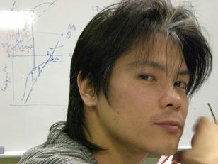

門野利治

| 研究テーマ | 対称性の破れとスピン分裂した表面電子状態の研究 |
|---|---|
| 出身 | 京都府 |
| 卒業論文題目 | |
| 修士論文題目 | |
| 原著論文 | Direct evidence of spin-polarized band structure of Sb(111) surface T. Kadono, K. Miyamoto, R. Nishimura, K. Kanomaru, S. Qiao, K. Shimada, H. Namatame, A. Kimura, and M. Taniguchi Appl. Phys. Lett. 93, 252107 (2008) |
| 国際学会 |
1. 学会名：12th Hiroshima International Symposium on Synchrotron Radiation 題目：Direct observation of spin polarized band structure on Sb(111) surface by spin and angle resolved photoemission spectroscopy ポスター発表 場所：Higashi-Hiroshima, Japan (2008.3) |
| 国内学会 |
1. 学会名：日本物理学会 2008年秋季大会 題目：Sb(111)単結晶表面のスピン分解ARPES 場所：岩手大学 (2008.9) 口頭発表 2. 学会名：日本物理学会 第62回年次大会 題目：スピン分解ARPES によるSb(111) 表面のスピン偏極バンド構造の観測 場所：北海道大学 (2007.9) 口頭発表 3. 学会名：日本物理学会 2007年春季大会 題目：ホイスラー型合金Ru2-xFexCrGe の電子状態 場所：鹿児島大学 (2007.3) 口頭発表 4. 学会名：第20回日本放射光学会年会・放射光科学合同シンポジウム 題目：充填ホイスラー型強磁性体Ru2-xFexCrGe の軟Ｘ線光電子分光 場所：広島国際会議場 (2007.1) ポスター発表 |